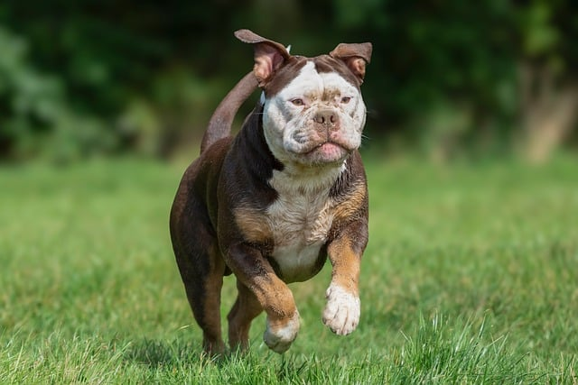

A imagem mostra um pequeno barco ancorado em águas calmas, cercado por uma névoa densa. A cena transmite tranquilidade e solidão, com tons suaves e uma atmosfera serena. A presença de uma boia laranja próxima ao barco adiciona um toque sutil de cor ao cenário monocromático.
Imagem de Sasha Matic por Pixabay
A imagem mostra uma mulher vestindo um traje elegante de cor azul profundo, com detalhes delicados na gola. Ela usa um adorno de cabeça impressionante, feito de pérolas, com correntes que descem dos lados, emoldurando seu rosto. A mulher está parcialmente escondida atrás de uma coluna, com um olhar sereno e misterioso, criando um ar de elegância e mistério. O fundo desfocado destaca ainda mais sua presença e o requinte de seu traje e acessórios.
Imagem de SAMUEL OFOSU por Pixabay
A imagem mostra dois pássaros coloridos, de penas verdes vibrantes, sentados juntos em um galho. Eles estão muito próximos, com um tocando o bico do outro, transmitindo carinho e companheirismo. O fundo verde desfocado destaca ainda mais suas cores vivas.

Imagem de Bernhard Jaeck por Pixabay
A imagem mostra uma lebre em meio a um campo verde, cercada por plantas altas e gramado. A lebre tem pelagem marrom, grandes orelhas eretas e um olhar atento, como se estivesse observando algo à distância. A luz do sol realça os detalhes do pelo e das plantas ao redor, criando uma atmosfera tranquila e natural.

Imagem de didier aires por Pixabay
A imagem mostra um cachorro robusto correndo em um gramado verde. Ele tem pelagem marrom e branca, com expressão determinada e orelhas levemente dobradas. Suas patas estão no ar, capturando o movimento, e o fundo desfocado com árvores dá destaque à energia do cão.
Imagem de Zachtleven fotografie por Pixabay